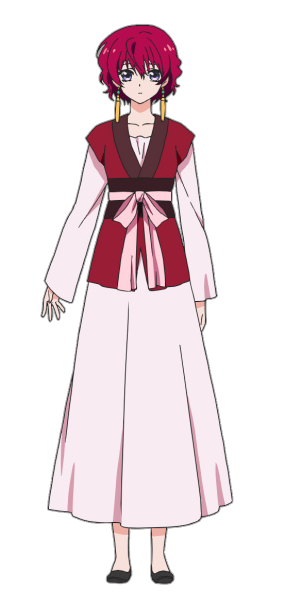
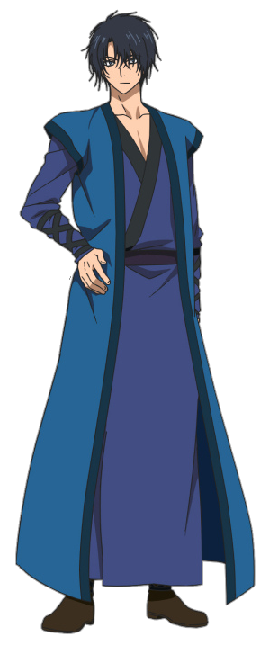

|  |
Yona
(aaninayttely: Chiwa Saitoo (japani); Monica Rial (englanti))
Yona on sarjan paahenkilo. Han on Koukan kuningaskunnan ainoa prinsessa. Kapinalliset tappoivat hanen aitinsa kun han oli nuori, jattaen hanen isansa, Kuningas Ilin, kasvattamaan hanet Son Hakin ja Soo-wonin kanssa. Koska han oli prinsessa, oli han aluksi myos riippuvainen, hemmoteltu ja naiivi. Kuitenkin, hanen isansa kuoleman ja Soo-wonin petoksen jalkeen han paatti olla itsenaisempi ja tarpeeksi vahva taistelemaan ja suojelemaan itseaan. Sen vuoksi han pyysi Hakia opettamaan jousiammuntaa ja miekkailua. Vaikka Yona oli aluksi uskomattoman epavarma tappamisesta, han lopulta paasi yli epavarmuudestaan Kum-jia vastaan kaydyn taistelun aikana. Hanen on sanottu olevan Hiryuun, Koukan kuningaskunnan ensimmaisen kuninkaan, jalleensyntyma. Hiryuulla oli myos punaiset hiukset. Koska han oli Hiryuun jalleensyntyma, neljan legendaarisen lohikaarmeen veri reagoi valittomasti kun he laskevat katseensa Yonaan ja he kuulevat alkuperaisten neljan legendaarisen lohikaarmeen valan, jossa he lupasivat suojella Hiryuuta. Yona matkustaa ympari maata oppiakseen ulkopuolisesta maailmasta seka suojellakseen maataan ja ihmisiaan salassa. Vaikka Yona ei voi antaa Soo-wonille anteeksi, osa hanesta viela valittaa Soo-wonista ja han viela pitaa mukanaan hiuspinnia, jonka Soo-won antoi hanelle. Ajan kuluessa han kuitenkin nayttaa saaneen tunteita Hakia kohtaan. Han paaasiallisesti kayttaa jousipyssya ja nuolia taistelussa ja myohemmin oppii kayttamaan miekkaa.Yona on sarjan paahenkilo. Han on Koukan kuningaskunnan ainoa prinsessa. Kapinalliset tappoivat hanen aitinsa kun han oli nuori, jattaen hanen isansa, Kuningas Ilin, kasvattamaan hanet Son Hakin ja Soo-wonin kanssa. Koska han oli prinsessa, oli han aluksi myos riippuvainen, hemmoteltu ja naiivi. Kuitenkin, hanen isansa kuoleman ja Soo-wonin petoksen jalkeen han paatti olla itsenaisempi ja tarpeeksi vahva taistelemaan ja suojelemaan itseaan. Sen vuoksi han pyysi Hakia opettamaan jousiammuntaa ja miekkailua. Vaikka Yona oli aluksi uskomattoman epavarma tappamisesta, han lopulta paasi yli epavarmuudestaan Kum-jia vastaan kaydyn taistelun aikana. Hanen on sanottu olevan Hiryuun, Koukan kuningaskunnan ensimmaisen kuninkaan, jalleensyntyma. Hiryuulla oli myos punaiset hiukset. Koska han oli Hiryuun jalleensyntyma, neljan legendaarisen lohikaarmeen veri reagoi valittomasti kun he laskevat katseensa Yonaan ja he kuulevat alkuperaisten neljan legendaarisen lohikaarmeen valan, jossa he lupasivat suojella Hiryuuta. Yona matkustaa ympari maata oppiakseen ulkopuolisesta maailmasta seka suojellakseen maataan ja ihmisiaan salassa. Vaikka Yona ei voi antaa Soo-wonille anteeksi, osa hanesta viela valittaa Soo-wonista ja han viela pitaa mukanaan hiuspinnia, jonka Soo-won antoi hanelle. Ajan kuluessa han kuitenkin nayttaa saaneen tunteita Hakia kohtaan. Han paaasiallisesti kayttaa jousipyssya ja nuolia taistelussa ja myohemmin oppii kayttamaan miekkaa.
|
|  |
Son Hak
(aaninayttely: Tomoaki Maeno, Ayahi Takagaki (nuori) (japani); Christopher R. Sabat (englanti))
Son Hak on Yonan lapsuudenystava ja henkivartija, kuten myos Tuuliheimon entinen kenraali. Hanet tunnetaan "Ukkospetona" hanen uskomattomista salamamaisista taitelukyvyistaan, saaden hanelle Koukan kuningaskunnan voimakkaimman sotilaan nimikkeen. Hanen lahjakkuutensa on jo huomattu siita asti kun han oli 13-vuotias ja han oli myos ensimmainen henkilo, josta tuli kenraali niin nuorella ialla. Hak oli orpo, joten hanet adoptoi Tuuliheimon edellinen kenraali, Son Mundok, lapsenlapsekseen. Hak on yleensa rauhallinen ja valinpitamaton, satunnaisesti kiusaten Yonaa, vaikka han oikeasti valittaa syvasti Yonasta ja vannoo suojelevansa hanta kaikin keinoin. Han oli Soo-wonin hyva ystava ennen hanen petostaan ja nayttaa rakastaneen Yonaa nuoresta iasta lahtien. Kuitenkin, tietaessaan etta Yonalla oli tunteita Soo-wonia kohtaan, Hak on tukahduttanut omat tunteensa sen puolesta, etta Yona ja Soo-won saisivat elaa rauhassa yhdessa. Han lupaisi tulevansa Soo-wonin apuriksi, jos Soo-wonin naisi Yonan ja tulisi kuninkaaksi. Hakin on naytetty olevan erityisen suojelevainen ja jopa mustasukkainen, kun muut menevat liian lahelle Yonaa. Taistelussa Hak kayttaa Hsu Quandaoa paaaseenaan.
|